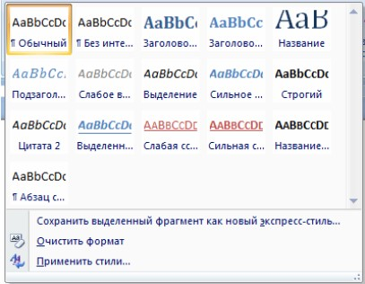
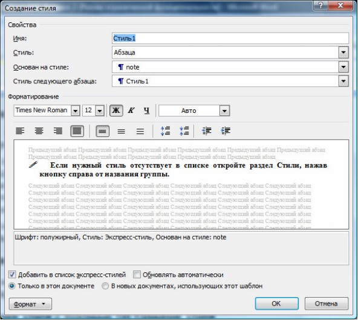
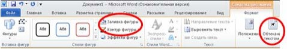
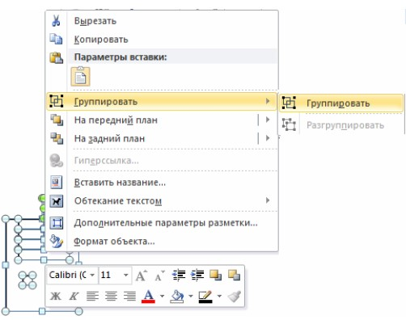
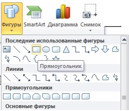
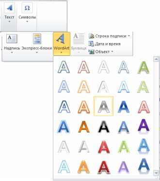
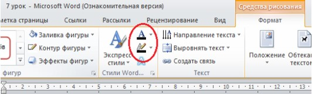
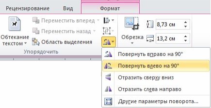
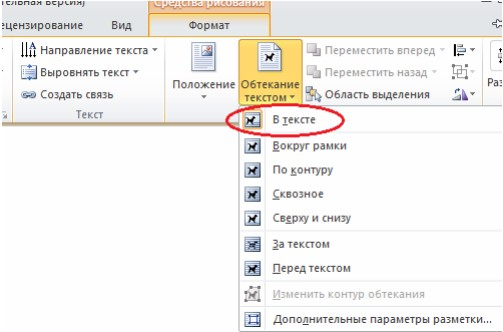
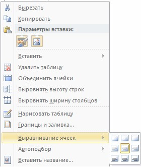

Стилизация документа
Стили
Понятие стиля
Стиль — это набор параметров форматирования символов, абзацев, таблиц, списков которые хранятся под определенным именем. Применение созданного ранее стиля абзаца к выделенному абзацу позволяет задать сразу несколько параметров форматирования абзаца и т.д.
Использование стилей позволяет быстро выполнять оформление текста в едином художественном стиле, а также использовать некоторые автоматизированные способы работы с документом, как, например, создание оглавления.
Существуют два типа стилей текста: стиль абзацев и стиль символов. Стиль абзаца может быть применен только к абзацу или нескольким абзацам, а стиль символа — только к символу или нескольким символам. Вы также можете использовать стили таблиц и списков.
Стили, доступные в данном документе, объединены в список стилей. Вы можете легко просмотреть список стилей на вкладке Главная в группе Стили

Рис. Поле стилей
Применение стилей
- Поместите курсор в абзац или выделите несколько абзацев, которые требуется отформатировать определенным стилем.
- На вкладке Главная в группе Стили наведите на выбранный стиль, просмотрите автоматическое изменение текста согласно стиля, выберите нужный тип и щелкните ЛКМ.
Создание стиля
Вы можете создать собственные стили и использовать их для оформления данного и других документов.
Создание стиля с помощью ОД Создание стиля
- Создайте новый абзац.
- Выберите вкладку Главная - Группа Стили, нажмите кнопку для открытия раздела Стили. Откроется раздел Стили.
- Нажмите кнопку Создать стиль. Откроется диалоговое окно Создание стиля (New Style)
- Задайте необходимые параметры и нажмите OK.

Рис. Создание стиля
Создание графических иллюстраций
- Установите курсор в пустой абзац после заголовка. Сюда мы вставим иллюстрацию.
- Выполните команду Вставка / (Иллюстрации) Фигуры / Прямоугольник. Курсор должен принять следующий вид: . Им наводим на то место, где должен находиться один из углов прямоугольника, и нажимаем на левую кнопку мыши, удерживая её, рисуем прямоугольник. Это будет системный блок.
- На появившийся панели инструментов Рисование измените некоторые данные прямоугольника (убедитесь в том, что он выделен):

Рис. Рисование
- выберите Формат / (Стили фигур) Контур фигуры - Черный,
- выберите Формат / (Стили фигур) Заливки фигуры – Нет заливки,
- выберите Формат / (Упорядочить) Обтекание текстом – По контуру.
- Преступим к рисованию остальных прямоугольников на системном блоке. Снова выполните команду Вставка / (Иллюстрации) Фигуры / Прямоугольник, или же Формат / (Вставить фигуры) Прямоугольник и настроите заливку, контур фигур. Нарисуйте еще пять прямоугольников (не забывайте нажимать кнопку Прямоугольник).
- Выполнить команду Вставка / (Иллюстрации) Фигуры Овал или же Формат / (Вставить фигуры) Овал.
- Сгруппируйте все фигуры, которые нарисовали. Удерживая кнопку Ctrl на клавиатуре, выделите фигуры. Для выделения необходим один щелчок левой кнопкой мыши: у выделенной фигуры появятся круглые точки. После выделения всех фигур отпустите Сtrl, мышь наведите на линию одной из выделенных фигур и нажмите на правую кнопку мыши. Если Вы все правильно сделали, должно появиться окошко такого вида.

Рис. Группировать
Нажмите Группировать. Попробуйте перемещать этот объект. Заметили, что все фигуры выделяются и двигаются вместе сразу? Во время этих действий может измениться обтекание текста. Если это произошло выделите рисунок и выполните команду Формат / (Упорядочить) Обтекание текстом/ По контуру).

Рис. Фигуры
Текстовые эффекты
Создадим теперь фигурный текст (номера телефонов).
- Установите курсор в последний пустой абзац после заголовка. Сюда мы вставим номера телефонов.
- Выполните команду Вставка / (Текст) WordArt.
- Выберите необходимый стиль текста: Формат / (Стили фигур) Заливка / Черный и Формат / (Стили фигур) Контур / Нет контура.
- На панели инструментов программы WordArt установите тип шрифта Times New Roman и размер шрифта 12 пунктов.
- В окне Ввод текста напишите “12-34-56 (Вася)”.
- Выделите объект WordArt (столбец 12-34-56 (Вася)). Для этого щелкните по нему мышкой.
- Выполните команду Формат / (Упорядочить) Повернуть/ Повернуть влево на 90 градусов.
- Выполните команду Формат / (Упорядочить) Обтекание текстом / В тексте.
- Для обрамления объекта вставьте таблицу (курсор должен стоять на пустом абзаце после объекта WordArt): Вставка/ (Таблица) Таблица и нажмите Вставить таблицу. В появившемся окне диалога введите параметры: Число столбцов-15, Число строк-1.
- Выделите вставленный ранее объект WordArt и выполните следующую команду: Главная / (Буфер обмена) Вырезать. Курсор поставьте в первую ячейку таблицы и выполните Главная / (Буфер обмена) Вставить.
- Вставьте этот объект нужное число раз.
- Мышкой наведите на левый верхней угол таблицы и щелкните символ Убедитесь что ваша таблица выделилась. Не теряя выделения еще раз щелкните правой кнопки мыши по этому значку. Выполните команду Выравнивание ячеек / Выровнять по центру.

Рис. WordArt

Рис. Контур

Рис. Поворот

Рис. Обтекание

Рис. Выравнивание